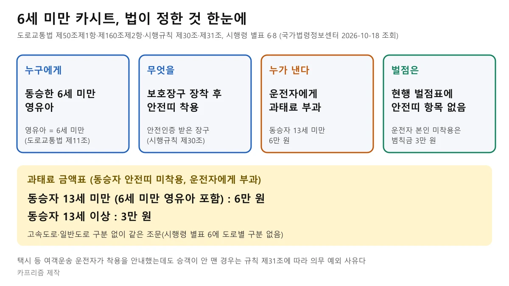
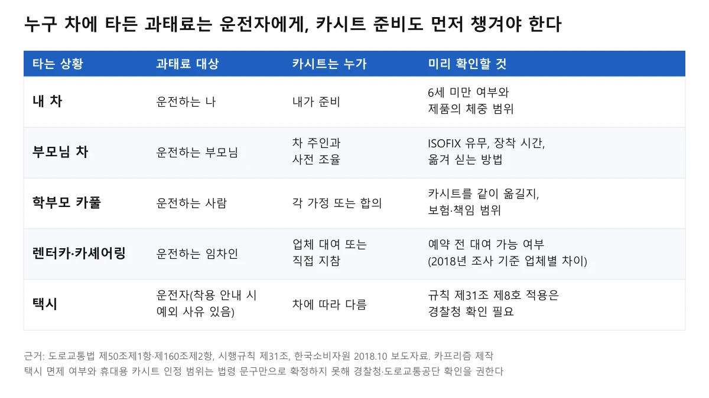
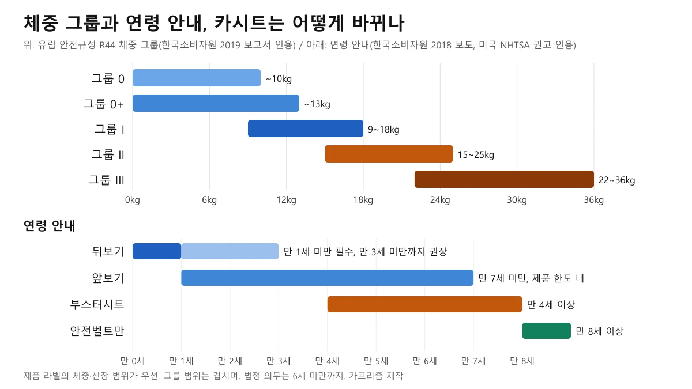
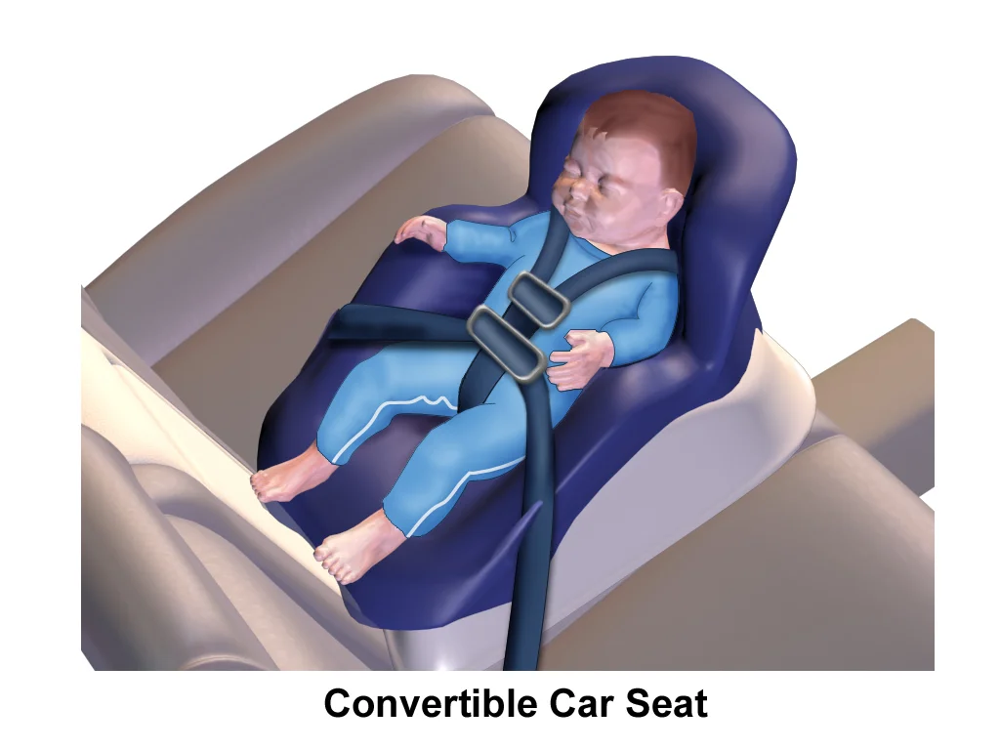
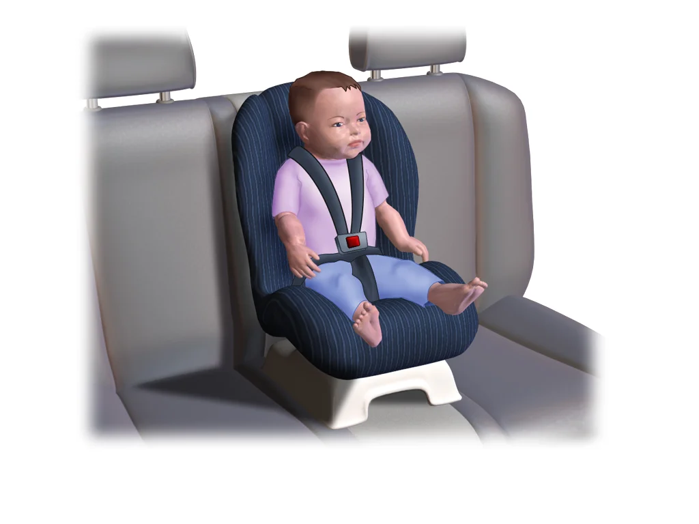
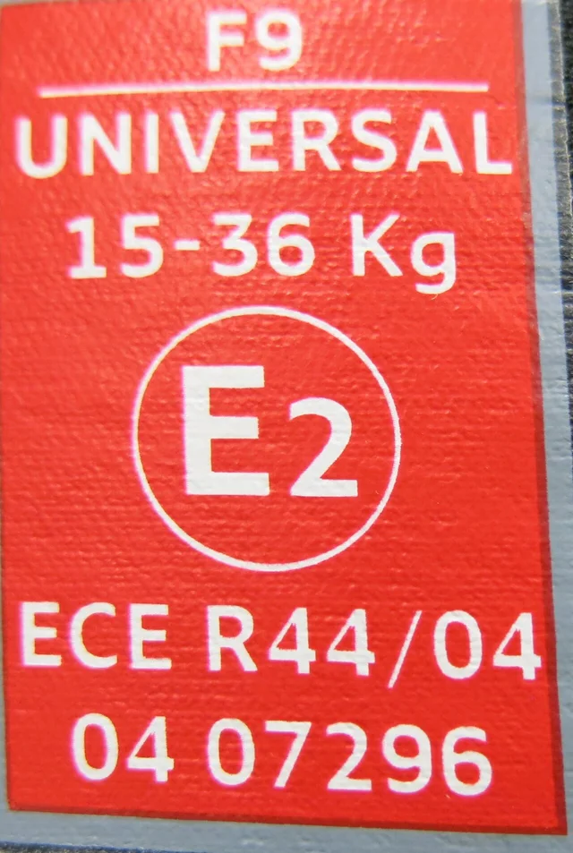
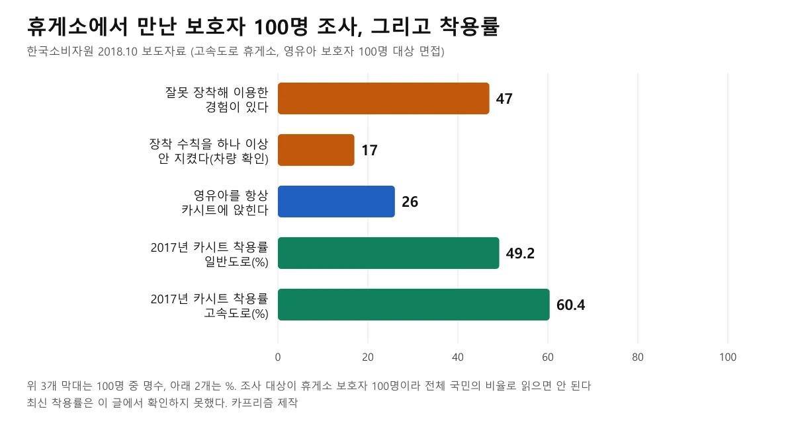
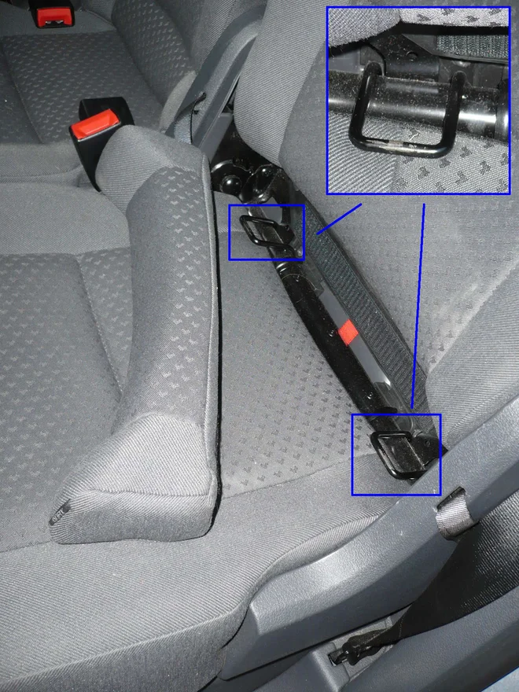

▲ 등받이가 있는 부스터형 카시트(주니어용) 네 개. 특정 제품을 추천하는 사진이 아니다 ⓒ Daderot / Wikimedia Commons (CC0)
"우리 아이는 이제 몇 살까지 카시트를 써야 하고, 언제 부스터로 바꿔도 되나요?" 연말 귀성길을 앞두고 가장 많이 나오는 질문인데, 법은 나이 한 줄만 말하고 제품 전환 시기는 따로 정해 주지 않는다. 그래서 같은 6세 앞에서도 집마다 답이 달라진다.
이 글은 법이 실제로 요구하는 것(6세 미만, 안전인증 장구, 운전자 과태료)과 법이 말하지 않는 것(전환 시기, 택시·카풀·렌터카에서의 현실)을 나눠 정리한다. 설치 방법과 ISOFIX·탑테더 같은 실무는 카시트 고르고 다는 법에서 다뤘으니 여기서는 반복하지 않는다. 법령은 2026년 10월 18일 국가법령정보센터에서 조회한 본문 기준이다.
1. 법이 정한 것 — 누구에게, 무엇을, 얼마
도로교통법 제50조제1항은 자동차 운전자가 운전 중 좌석안전띠를 매야 하고, 모든 좌석의 동승자도 매도록 해야 한다고 정한다. 괄호 안에 중요한 문구가 있다. 영유아는 "유아보호용 장구를 장착한 후의 좌석안전띠"를 말한다. 영유아는 제11조에서 6세 미만으로 정의한다.
즉 6세 미만 아이에게는 어른용 안전띠만 매는 것으로는 의무를 채우지 못한다. 카시트에 앉히고, 그 카시트와 아이를 제대로 고정해야 한다는 뜻이다. 무릎에 안고 타는 것은 보호장구를 장착한 것이 아니다. 조문의 뜻과 아이에게 성인용 안전띠가 위험한 이유는 6세 미만 법 기준 기사에 풀어 두었으니, 여기서는 금액 구조와 조문 근거 표에 집중한다.

▲ 도로교통법·시행령·시행규칙 조회 내용을 정리한 도표. 카프리즘 제작
| 구분 | 내용 | 근거 |
|---|---|---|
| 의무 대상 | 6세 미만 영유아, 유아보호용 장구 장착 후 안전띠 | 도로교통법 제50조제1항, 제11조제1항 |
| 장구 조건 | 어린이제품 안전 특별법 제17조에 따른 안전인증을 받은 장구 | 도로교통법 시행규칙 제30조 |
| 과태료(운전자) | 동승자 13세 미만 6만 원 / 13세 이상 3만 원 | 법 제160조제2항제2호, 시행령 별표 6 |
| 운전자 본인 미착용 | 범칙금 3만 원(승용차 기준) | 시행령 별표 8 |
| 벌점 | 확인한 시행규칙 벌점표에 안전띠 항목 없음 | 시행규칙(2026-08-24 시행본) |
법령 원문은 국가법령정보센터에서 볼 수 있다. 도로교통법 원문 바로가기
2. 범칙금이 아니라 과태료, 고속도로라고 달라지지 않는다
이 주제에서 가장 흔한 오해 세 가지를 조문으로 바로잡는다.
- "범칙금 6만 원"이 아니다: 동승자의 안전띠·장구 미착용은 운전자에게 부과하는 과태료다. 범칙금 3만 원은 운전자 본인이 안전띠를 안 맸을 때의 금액이다
- 6세 미만에게만 따로 있는 금액이 아니다: 시행령 별표 6은 동승자가 13세 미만이면 6만 원, 13세 이상이면 3만 원으로만 나눈다. 6세 미만 영유아는 13세 미만 구간에 들어간다. 기사마다 "3만 원"과 "6만 원"이 섞여 나오는 것도 이 구분 때문이다
- 고속도로와 일반도로의 금액 차이는 확인하지 못했다: 별표 6의 해당 항목에는 도로 종류별 구분이 없다. 고속도로에서도 같은 조문이 적용된다고 읽힌다
📍 벌점 10점은 어떻게 되었나
경찰청이 2026년 7월 안전띠·이륜차 안전모 미착용과 방향지시등 미점등에 벌점 10점을 신설하겠다고 알린 보도가 있다. 다만 이 글을 쓴 10월 18일 조회한 시행규칙(2026년 8월 24일 시행본)에는 안전띠 항목이 없고 공포도 확인하지 못했다. 신설되더라도 운전자 본인 미착용 기준인지 동승자 미착용도 포함하는지는 보도만으로 알 수 없다. 전 좌석 안전띠 과태료와 벌점 추진 경과는 뒷좌석 안전띠 가이드에서 따로 정리했다.
금액은 출발 전에 원문으로 한 번 더 확인하자. 도로교통법 시행령(별표 6) 바로가기
3. 택시·카풀·렌터카·부모님 차 — 과태료는 운전하는 사람 몫
제50조제1항의 의무자는 "자동차의 운전자"다. 그래서 아이 부모가 따로 타고 있어도 핸들을 잡은 사람이 과태료 대상이 된다. 아래 도표는 상황별로 누가 무엇을 챙겨야 하는지 정리한 것이다.

▲ 승차 상황별 책임과 사전 확인 사항. 카프리즘 제작
택시는 "카시트 안 써도 된다"가 아니다
시행규칙 제31조는 안전띠를 매지 않아도 되는 경우 8가지를 정한다. 부상·질병·장애·임신, 후진, 신장·비만 등 신체 상태, 긴급자동차, 경호 차량, 선거 업무 차량, 우편 집배처럼 자주 타고 내리는 업무가 있고, 마지막 8호가 택시 같은 여객자동차운송사업용 자동차다.
8호의 내용은 운전자가 승객의 주취·약물복용 등으로 안전띠를 매도록 할 수 없거나, 승객에게 안내했는데도 승객이 착용하지 않은 때다. 영유아 카시트를 통째로 면제한다는 문장은 없다. 카시트가 없는 택시에서 6세 미만 아이를 태웠을 때 이 8호가 어떻게 적용되는지는 법령 문구만으로 단정하지 못해, 경찰청이나 도로교통공단에 문의해야 한다는 점만 밝혀 둔다. 택시 예외의 일반 설명과 휴대용 부스터 활용은 6세 미만 법 기준 기사의 예외 항목에서도 볼 수 있다.
카풀·부모님 차
학부모 카풀과 조부모 차 운행도 같은 구조다. 운전하는 사람이 장구 장착 여부를 확인해야 한다. 아이를 맡기는 쪽이 카시트를 같이 보내거나, 태우는 쪽이 같은 규격의 카시트를 따로 갖추는 식으로 미리 정해 두는 것이 안전하다. 사고가 났을 때의 책임·보험 문제는 학부모 카풀 법적 책임 기사에서 다뤘다.
렌터카·카셰어링
한국소비자원이 2018년 10월 낸 보도자료에 따르면 조사한 렌터카·카셰어링 업체 20곳 중 13곳이 카시트 대여가 가능하다고 했고, 실제로 쉽게 빌릴 수 있는 곳은 6곳이었다. 8년 전 자료라 지금과 같다고 볼 수 없지만, 예약할 때 대여 가능 여부, 아이의 체중에 맞는 종류, 설치 방법을 먼저 물어야 하는 이유를 보여 준다. 최신 수치는 확인하지 못했다. 한국소비자원 보도자료 바로가기
4. 몇 살, 몇 kg에 무엇으로 — 법에 없는 전환 시기
법은 6세 미만이라는 나이만 정한다. 영아용에서 유아용으로, 다시 주니어·부스터로 바꾸는 시점은 법령이 아니라 제품에 붙은 체중·신장 범위가 정한다. 안전인증 대상 어린이제품 기준도 제품에 "사용 가능한 어린이의 체중 범위"를 표시하도록 하고 있다(한국소비자원 2019년 안전실태조사 보고서가 정리한 표시사항).

▲ 체중 그룹(R44)과 연령 안내. 연령은 2018년 한국소비자원 보도가 미국 NHTSA 권고를 소개한 내용이다. 카프리즘 제작
| 체중 그룹 | 체중 범위 | 시중 분류 (대략) |
|---|---|---|
| 그룹 0 | ~10kg | 영아용(신생아용) |
| 그룹 0+ | ~13kg | 영아용 |
| 그룹 I | 9~18kg | 유아용 |
| 그룹 II | 15~25kg | 주니어(학령기)용 |
| 그룹 III | 22~36kg | 주니어·부스터 |
그룹 범위는 서로 겹친다. 같은 체중이라도 어느 쪽을 쓸지는 제품 설명서의 체중 범위, 아이의 키와 앉은 자세로 판단해야 한다. 오른쪽 열은 시중에서 흔히 쓰는 이름과의 대략적인 대응(카프리즘 정리)이며 공식 구분은 아니다.
그룹 구분은 국내 기준에도 쓰인다. 소비자원 보고서가 인용한 국내 안전인증 기준 부속서 3은 "0, 0+, I(18kg 이하)"와 "II, III(15kg 이상 36kg 이하)"로 구분해 허용 기준을 달리 정한다. 유럽에는 체중 대신 신장으로 구분하는 R129(i-Size) 규정도 있다(소비자원 보고서 설명). 국내 안전인증에서 R129 제품을 어떻게 다루는지는 확인하지 못했다.
연령 안내는 이렇게 읽는다
2018년 한국소비자원 보도자료는 "만 1세 미만은 뒤보기로 장착"을 수칙으로 제시했다. 경향신문이 같은 날 정리한 해설은 미국 NHTSA 권고를 인용해 뒤보기는 만 1세 미만에 필수이고 만 3세 미만까지 권장, 앞보기는 만 1세 이상에서 제품의 신장·체중 한계 안이라면 만 7세 미만까지, 부스터시트는 만 4세 이상, 안전벨트만 쓰는 시기는 만 8세 이상으로 소개했다.
이는 한국 법정 기준이 아니라 외국 권고를 소개한 안내다. 그리고 "제품의 한도 안이라면 앞 단계 방식을 오래 유지하라"는 취지가 같이 있다. 나이가 되었다고 바꾸는 것이 아니라 제품의 한계에 가까워졌을 때 바꾼다는 순서다. 경향신문 해설 바로가기

▲ 영아가 눕듯이 기대는 형태의 카시트 사용 일러스트 ⓒ BruceBlaus / Wikimedia Commons (CC BY-SA 4.0)

▲ 어깨·가슴 끈으로 고정하는 하네스형 카시트 일러스트 ⓒ BruceBlaus / Wikimedia Commons (CC BY-SA 4.0)
▲ 등받이가 있는 부스터형 카시트(주니어용) 네 개. 아이를 높여 차량 안전띠가 어깨·골반에 맞게 걸리도록 돕는 형태다 ⓒ Daderot / Wikimedia Commons (CC0)
✅ 졸업 신호는 나이가 아니라 안전띠가 걸리는 위치
법적 의무는 6세 미만에서 끝나지만, 체격에 맞지 않는 성인용 안전띠가 목이나 복부 쪽으로 지나가는 문제는 6세 이후에도 남는다. 어깨와 골반에 제대로 걸리는지 보는 기준은 6세 미만 법 기준 기사에서 법과 안전의 차이로 따로 정리했다. 구체적인 키·체중 졸업선은 공식 자료로 확인하지 못해 제시하지 않는다.
5. 제품 인증 확인법 — KC 안전인증 표시와 체중 범위부터
시행규칙 제30조는 안전인증을 받은 장구를 쓰라고 한다. 한국소비자원 보고서에 따르면 자동차용 어린이보호장치는 어린이제품 안전 특별법상 "안전인증대상어린이제품"이며, 국내 제조품은 출고 전에, 수입품은 통관 전에 안전인증 표시를 해야 하고, 인증 표시가 없는 제품은 판매할 수 없다.

▲ 유럽 ECE R44/04 승인 라벨 사례(15~36kg, Universal). 한국 판매품은 이와 별도로 KC 안전인증 표시와 체중 범위 표시를 확인해야 한다 ⓒ Beademung / Wikimedia Commons (CC BY-SA 3.0 de)
구입 전후에 아래 순서로 본다.
- 제품 본체와 포장에 안전인증 표시(KC)와 인증번호가 있는가: 표시가 없으면 사지 않는다
- 제품에 적힌 사용 가능 체중 범위가 아이 체중과 맞는가: 종류·구속 방법·체중 범위는 표시 의무 항목이다
- 인증 정보를 제품안전정보센터에서 조회한다: 홈페이지의 정보공개 메뉴에 인증정보 검색이 있다(검색 방법 상세는 직접 확인하지 못했다)
- 해외 직구·휴대용·중고는 특히 조심한다: 한국소비자원이 2020년 2월 낸 자료는 포털 상위 5만 원 이하 휴대용 카시트 15개 모두 안전인증 표시가 없었고, 충돌시험에서 미인증 제품은 목 부위가 찢어지거나 골반 고정장치가 파손됐다고 밝혔다
제품안전정보센터 바로가기 비인증 휴대용 카시트 조사 보도 바로가기
📍 인증 제품을 써야 한다는 법 문구, 미인증이면 어떻게 되나
시행규칙 제30조는 영유아가 안전띠를 맬 때 "안전인증을 받은 유아보호용 장구를 착용하여야 한다"고 적는다. 인증 표시가 없는 제품을 쓴 운전자가 실제로 어떻게 단속되는지는 이번에 확인하지 못했다. 단속 여부와 별개로 충돌시험에서 안전이 갈렸다는 점은 위 소비자원 자료에 있다.
6. 자주 하는 설치 실수 — 소비자원이 100명을 봤더니
한국소비자원이 고속도로 휴게소에서 영유아를 둔 보호자 100명을 조사한 2018년 결과를 보면, 잘못 장착해 이용한 경험이 있는 사람이 47명이었다. 실제 차량 점검에서 장착 수칙을 하나 이상 지키지 않은 사람은 17명이었고, 영유아를 항상 카시트에 앉힌다고 답한 사람은 26명뿐이었다. 같은 자료에는 2017년 카시트 착용률이 일반도로 49.2%, 고속도로 60.4%로 나온다.

▲ 한국소비자원 2018년 10월 보도자료의 조사 결과. 100명 조사이므로 전체 비율로 읽으면 안 된다. 카프리즘 제작
소비자원이 제시한 다섯 가지 수칙은 지금도 점검표로 쓸 만하다. 이를 출발 전에 하나씩 눈으로 확인하는 것이 설치 실수를 줄이는 가장 쉬운 방법이다.
| 수칙 | 점검 방법 |
|---|---|
| 뒷좌석(좌·우측)에 장착 | 조수석에 두지 않았는지 |
| 좌석에 단단히 고정 | 카시트를 잡고 흔들어 헐겁지 않은지 |
| 만 1세 미만은 뒤보기 | 방향이 맞는지, 제품 한계 안인지 |
| 등받이를 충분히 눕혀 장착 | 뒤보기 45° 미만, 앞보기 75° 미만 안내 |
| 머리지지대를 머리에 맞게 조절 | 아이 머리를 충분히 받치는지 |

▲ 뒷좌석 시트 틈에 있는 ISOFIX 고정 바(확대 삽입). 고정 방식별 점검은 카시트 고르고 다는 법 기사 참조 ⓒ Tetris L / Wikimedia Commons (CC BY-SA 3.0)
ISOFIX 표시등, 탑테더, 하네스 높이처럼 제품별 확인 항목은 설치와 선택 기사에 있다. 이 글의 5가지 수칙은 그 내용보다 앞선 "큰 틀" 확인용이다.
7. 귀성길·연말 이동 전 점검 — 출발 전날 5분
장거리 이동은 평소보다 카시트에서 보내는 시간이 길어진다. 짐을 싣고 어른 여러 명이 타는 날은 카시트 자리를 먼저 정하고, 나머지 자리와 짐을 맞추는 순서가 좋다.
✅ 출발 전 체크리스트
- 법 기준: 6세 미만 아이가 탄다면 안전인증 표시가 있는 장구를 모두 준비했는가. 어른 차량으로 옮겨 타는 경우 카시트도 같이 옮기는가
- 제품 한계: 아이의 최근 체중·키가 제품 표시 범위 안인가. 한계에 가까우면 새 단계로 바꿀 시기를 따져 본다
- 설치 5수칙: 뒷좌석, 단단한 고정, 만 1세 미만 뒤보기, 등받이 각도, 머리지지대 높이
- 자리 배치: 카시트가 여러 개면 모두 들어가는 좌석 조합을 미리 시험해 본다. 짐이 아이 좌석 쪽으로 쏟아지지 않게 한다
- 택시·렌터카·카풀: 카시트 대여나 지참 여부를 예약 전에 묻는다. 도착지에서 빌릴 때도 장착 방법을 먼저 배운다
- 겨울 옷차림: 두꺼운 외투를 입힌 채 조여도 되는지 제품 설명서를 확인한다. 자세한 내용은 설치 가이드를 참고한다
- 휴게소 정차: 아이를 내렸다 다시 태울 때도 하네스와 안전띠를 처음처럼 점검한다
벌점 신설 여부와 단속 일정은 시기별로 바뀔 수 있다. 출발 직전 경찰청 공지를 한 번 확인하고, 안전띠는 전 좌석에서 매는 습관을 같이 들이자.
8. 이 글이 확인하지 못한 것
- 택시에서의 영유아 면제: 시행규칙 제31조 제8호가 영유아 카시트에 어떻게 적용되는지는 법령 문구만으로 확정하지 못했다. 경찰청·도로교통공단 확인이 필요하다.
- 고속도로·일반도로 금액 차이: 시행령 별표 6에 도로별 구분이 없다는 점까지만 확인했다.
- 벌점 10점 신설 공포 여부: 10월 18일 조회한 시행규칙에는 없었고, 이후 공포 여부는 확인하지 못했다.
- 국토부·교통안전공단·KATRI의 최신 단계별 안내: 이 글의 연령·체중 안내는 한국소비자원 2018·2019년 자료에 의존한다. 최신 공식 안내는 찾지 못했다.
- 키(신장) 기준 졸업선: 공식 자료로 확인한 수치가 없어 제시하지 않았다. 제품 설명서의 신장·체중 범위를 따른다.
- R129(i-Size) 제품의 국내 인증 처리: 소비자원 보고서의 규정 설명까지만 확인했다.
- 미인증 제품 사용 시 단속 사례: 확인하지 못했다.
- 렌터카·카셰어링 현재 카시트 대여율: 2018년 수치만 확인했다.
9. 요약
6세 미만 영유아는 안전인증을 받은 유아보호용 장구를 장착한 뒤 안전띠를 매야 하며(도로교통법 제50조제1항, 시행규칙 제30조), 어기면 운전자에게 동승자 13세 미만 6만 원, 13세 이상 3만 원의 과태료가 부과된다(시행령 별표 6, 2026년 10월 18일 조회).
과태료는 범칙금이 아니고, 확인한 시행규칙 벌점표에 안전띠 항목은 없다. 벌점 10점 신설은 추진 보도만 있고 공포는 확인하지 못했다. 고속도로와 일반도로의 금액 구분은 별표에서 찾지 못했다.
전환 시기는 법이 아니라 제품의 체중·신장 범위가 정한다. 소비자원 자료는 R44 체중 그룹(0~36kg)과 연령 안내를 소개했고, 설치 점검은 뒷좌석·단단한 고정·만 1세 미만 뒤보기·등받이 각도·머리지지대의 다섯 가지다. 택시·카풀·렌터카는 운전자가 책임지므로 예약과 출발 전에 카시트부터 확인하자.
📚 함께 읽으면 좋은 글